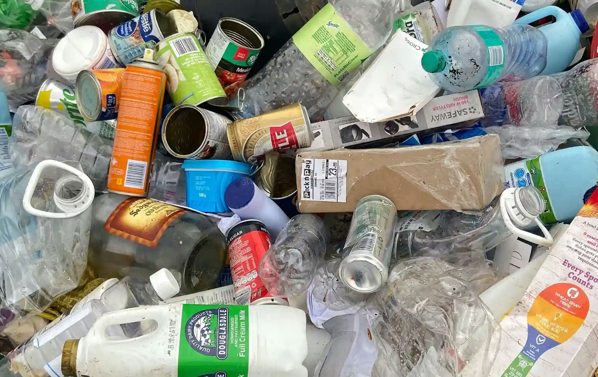
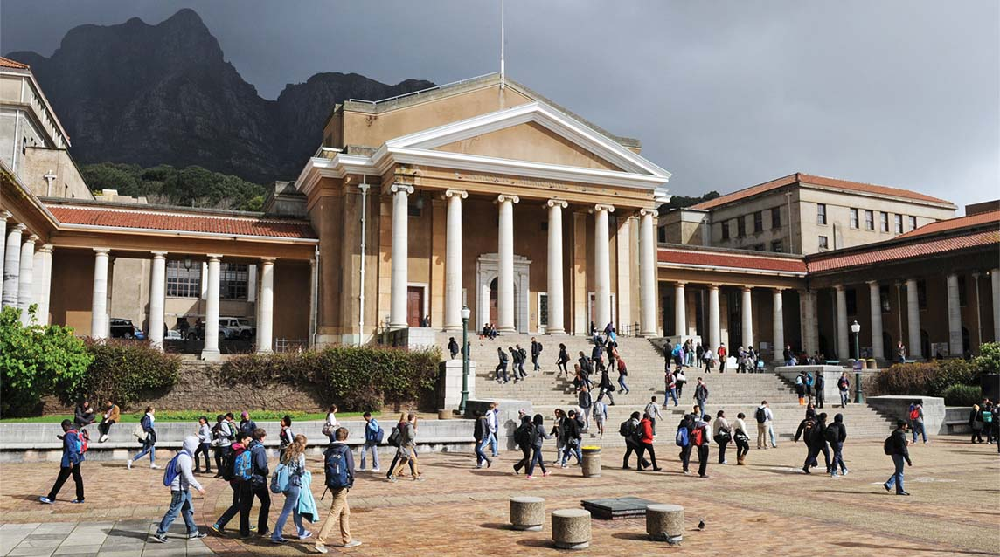
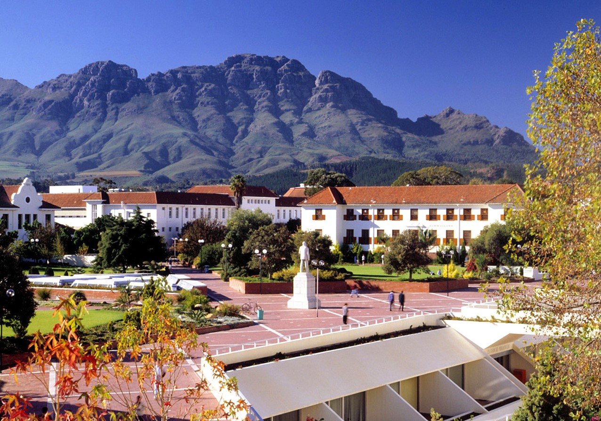
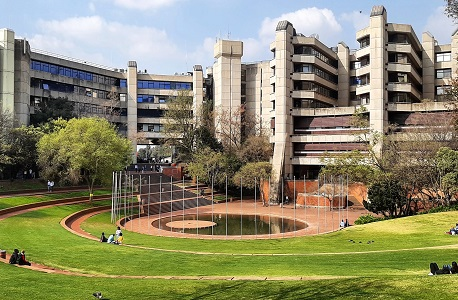
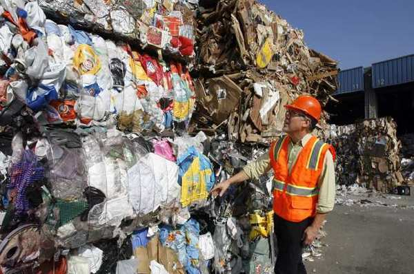

Collected and processed information
Recycling plays a crucial role in reducing greenhouse gas emissions by minimizing the need for new production processes. When we recycle materials like paper, glass, and plastic, it means that there is less demand for manufacturing these items from scratch. This leads to significant energy savings because collecting and using recycled materials may require less energy than producing goods from raw materials.For example, when we recycle paper instead of making it from wood pulp,

> we save trees and reduce the amount of energy needed to cut down trees and process them into paperRecycling plays a crucial role in reducing greenhouse gas emissions by minimizing the need for new production processes. When we recycle materials like paper, glass, and plastic, it means that there is less demand for manufacturing these items from scratch. This leads to significant energy savings because collecting and using recycled materials may require less energy than producing goods from raw materials. For example, when we recycle paper instead of making it from wood pulp, we save trees and reduce the amount of energy needed to cut down trees and process them into paperRecycling plays a crucial role in reducing greenhouse gas emissions by minimizing the need for new production processes. When we recycle materials like paper, glass, and plastic, it means that there is less demand for manufacturing these items from scratch. This leads to significant energy savings because collecting and using recycled materials may require less energy than producing goods from raw materials. For example, when we recycle paper instead of making it from wood pulp, we save trees and reduce the amount of energy needed to cut down trees and process them into paper. (Jam, 2023)
A professional who works to reduce waste and improve sustainability practices in communities or organizations is known as a waste reduction
specialist. They carry out checks, examine waste generation patterns, and create plans to cut waste and enhance recycling and reuse. They are
responsible for putting waste reduction plans into action, teaching stakeholders about sustainable practices, and making sure waste management
laws are followed. They try to improve waste management systems and encourage environmental responsibility by monitoring waste data and
investigating innovative technologies. In the end, a waste reduction specialist assists businesses in reaching their sustainability objectives
and minimizing their environmental effect. (Biddle, 2021)
Getting the necessary education is the first step towards becoming a Waste Reduction Specialist. It is necessary to have a bachelor's degree in environmental science, sustainability, or a similar field; however, you can also improve your credentials with advanced degrees or specialized coursework. In order to obtain real-world experience and expand your professional network, look for internships or entry-level jobs in the waste management or sustainability industries. It will also be crucial for this position to develop critical abilities like project management, analytical thinking, and effective communication

source: taken from the internetA number of universities highlight on environmental science, sustainability, and waste management in their programs and courses that are pertinent to becoming a Waste Reduction Specialist. Through its Department of Environmental and Geographical Science, the University Of Cape Town (UCT) offers a variety of programs, one of which is a Master of Environmental Management that addresses sustainability and waste management issues. Because of UCT's focus on research and real-world applications, students graduate with the knowledge and abilities necessary to create and carry out successful waste reduction plans.

source: taken from the internetSimilar to this, the Centre for Environmental Management at Stellenbosch University offers a Master's in Environmental Management with an emphasis on waste management, environmental policy, and sustainable practices. The curriculum places a significant emphasis on both theoretical knowledge and real-world experience in order to prepare students for careers in waste management and environmental consulting. Furthermore, the University of the Witwatersrand (Wits) provides an engineering viewpoint on waste reduction technologies and processes through waste management courses offered under its School of Chemical and Metallurgical Engineering. (Jonathan Bebb, Jim Kersy)

source: taken from the internetRelated courses are offered at the University of Johannesburg's Department of Environmental Management. Its curriculum include a strong emphasis on waste management techniques, environmental impact assessment, and sustainable development, equipping students for jobs in environmental consulting and waste reduction. All of these schools provide a thorough education that gives aspiring Waste Reduction Specialists the expertise they need to successfully handle waste management issues.(info@wasteplan.co.za)
Although both a Recycling Coordinator and a Waste Reduction Specialist strive to enhance waste management, their responsibilities and areas of emphasis are very different. The main goal of a Waste Reduction Specialist is to reduce the total amount of waste generated by different industries. In order to find opportunities for reduction, they must analyse waste streams, develop and implement waste minimization strategies, and encourage sustainable practices within communities or organizations. This position frequently entails a wider range of activities, such as the creation of policies, programs for composting, and source reduction, all of which are intended to reduce the amount of waste generated. In order to achieve long-term sustainability, the specialist aims to incorporate waste reduction strategies into organizational practices and public behaviour.

source: taken from the internetA Recycling Coordinator, on the other hand, is primarily concerned with the administration and improvement of recycling initiatives. Their responsibilities entail supervising the gathering, classification, and handling of recyclable items to guarantee their appropriate recycling instead of disposal in landfills. They are responsible for developing and overseeing recycling programs, informing the public and staff about recycling practices, and making sure that regional recycling laws are followed. Recycling is an important component of waste management, but a waste reduction specialist addresses many other aspects of the larger goals of waste reduction. Recycling Coordinators are usually more focused on the day-to-day operations of recycling programs, while trash Reduction Specialists approach sustainability and trash management more strategically.